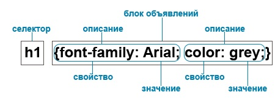

CSS (Cascading Style Sheets), або каскадні таблиці стилів, описують правила форматування окремого елемента веб-сторінки. Створивши стиль один раз, його можна застосовувати до будь елементів сторінки скільки завгодно разів. Визначення стилю складається з двох основних частин: самого елемента веб-сторінки - селектора, і команди форматування - блоку оголошення. Селектор повідомляє браузеру, який саме елемент форматувати, в блоці оголошення перелічено властивості команд форматування і їх значення.

Структура оголошення стилю елемента в CSS
Вбудовані стилі представляють набір стилів, що є частиною коду веб-сторінки, знаходяться між тегами <style> ... </ style> і розташовані всередині елемента <head>. Вбудовані стилі діють тільки на сторінці, на якій вони містяться. Вбудовані стилі мають пріоритет перед глобальними, але поступаються стилям, що вказані в тезі. На одній сторінці можна розміщувати довільну кількість вбудованих стилів:
<head>
<style type = "text / css">
h1, h2 {
color: red;
font-family: "Times New Roman", Georgia, Serif;
line-height: 1.3em;}
</ style>
</ head>
Внутрішні текстові стилі не використовують селектори, присвоєння стилю відбувається безпосередньо до html-елементу через атрибут style:
<p style = "font-family:" Times New Roman ", Georgia, Serif; color: # 70d7700;">
Зверніть увагу на цей текст. </ P> Недоліком такого способу є неможливість автоматичного використання даного стилю для іншого елемента.
Правило @import дозволяє завантажити зовнішню таблицю стилів. Щоб директива @import працювала, вона повинна розташовуватися всередині тега <style> перед іншими правилами:
<style type = "text / css">
@import url (mobile.css);
p { font-size: 0.9em; color: grey;}
</style>
Зовнішня таблиця стилів представляє текстовий файл з розширенням .css, в якому знаходиться весь набір стилів CSS. Він не містить HTML-код, тому його не потрібно вкладати всередину тегів <style> ... </style>. Задані в файлі стилі будуть працювати для всіх сторінок веб-сайту.
Зовнішня таблиця стилів (кілька таблиць стилів) прикріплюється до веб-сторінки за допомогою тега <link>, вкладеного в тег <head>:
<head>
<link rel = "stylesheet" type = "text / css" href = "style/style1.css">
<link rel = "stylesheet" type = "text / css" href = "style/style2.css">
</head>
де rel = "stylesheet" вказує тип посилання (посилання на таблицю стилів), а type = "text / css" повідомляє браузеру тип даних, в даному випадку це текстовий файл, що містить css-код.